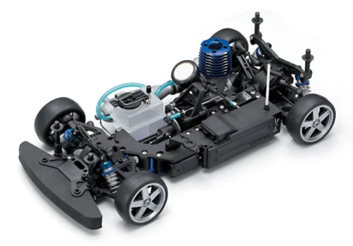

京商 FW-05T

引用元画像：rcscrapyard.net
📋 基本情報
| メーカー | 京商（Kyosho） |
|---|---|
| 機種名 | FW-05T（PureTen GPシリーズ） |
| シャーシ略称 | FW-05T |
| 型番 | 31362（PureTen GP FW-05T ReadySetシャーシ） 後継型番：31360AR（PureTen GP FW-05T Plus ReadySetシャーシ、2005年） ボディバリエーション： ・31360P No.PBF004 LAMBORGHINI MURCIELAGO R-GT ・31360P No.PBF007 BMW M3 GTR 24h 2005 Team BMW Motorsport ・31364 FERRARI 360 GTC Scuderia Ecosse ・31365 FERRARI 575 GTC G.P.C Sport ・31366 SUBARU IMPREZA WRC 2004 ・31367 BMW M3 GTR 2005 Team BMW Motorsport |
| 発売時期 | 2004年（初代FW-05T） 2005年（FW-05T Plus） |
| 価格 | 詳細不明（生産終了のため） |
| 生産状況 | 生産終了 |
| カテゴリー | ラジコンカー（1/10スケール GPツーリングカー） |
| サブカテゴリー | エンジン搭載 4WDツーリングカー |
| シリーズ | PureTen GP 4WDシリーズ |
📏 シャーシスペック
| 全長 | 詳細不明 |
|---|---|
| 全幅 | 詳細不明 |
| 全高 | 詳細不明 |
| ホイールベース | 詳細不明 |
| フレーム | アルミプレートシャーシ |
| 全備重量 | 詳細不明 |
⚙️ 駆動系
| 駆動方式 | 4WD（シャフトドライブ方式） |
|---|---|
| デフギヤ | ギヤデフ×3（フロント・センター・リア） |
| ドライブシャフト | ドッグボーンドライブシャフト＋プロペラシャフト |
| スタビライザー | アンチロールバー装備 |
| ベアリング | フルボールベアリング仕様 |
| エンジン | GXR15エンジン（リコイルスターター付属） |
🔧 サスペンション
| 形式 | 4輪独立懸架 |
|---|---|
| ダンパー | コイルスプリング＋オイルダンパー×4本 |
| スタビライザー | アンチロールバー装備 |
| ステアリング | 詳細不明 |
💡 特徴
PureTen FW-05T - 2004年の本格レーシングシャーシ
- 2004年に登場した京商のPureTen GP 4WDシャーシ
- 2005年にFW-05T Plusへアップグレード（#31360AR）
- FW-05S、FW-05Rモデルとの多くのパーツ互換性あり
- ランボルギーニ、フェラーリ、BMW、スバルなど豪華なボディバリエーション
高性能シャーシ構成
- アルミプレートシャーシ採用（高剛性）
- シャフトドライブ4WDシステム
- フロント・センター・リアの3つのギヤデフ搭載
- コイルスプリング＋オイルダンパーの本格サスペンション
- アンチロールバー（スタビライザー）装備
- フルボールベアリング仕様で滑らかな動作
GXR15エンジン標準装備
- 京商GXR15 .15エンジン搭載
- リコイルスターター付属で始動が容易
- ReadySet仕様で組み立て済み
豊富なボディバリエーション
- LAMBORGHINI MURCIELAGO R-GT（#31360P No.PBF004）
- BMW M3 GTR 24h 2005 Team BMW Motorsport（#31360P No.PBF007）
- FERRARI 360 GTC Scuderia Ecosse（#31364）
- FERRARI 575 GTC G.P.C Sport（#31365）
- SUBARU IMPREZA WRC 2004（#31366）
- BMW M3 GTR 2005 Team BMW Motorsport（#31367）
🔧 ぽすとそに工房での修理実績
修理難易度
★★★★★（非常に困難）
⚠️ 絶版のため、パーツ入手が非常に困難です。
よくある故障・注意点
- 2004年の絶版機種のため、パーツ入手が困難
- ギヤデフのメンテナンスが重要（3箇所のデフ調整）
- オイルダンパーのオイル漏れ（Oリング劣化）
- エンジンのメンテナンス（燃料系統、グロープラグなど）
- FW-05S、FW-05Rとのパーツ互換性あり（一部パーツは入手可能）
修理のポイント
- FW-05S、FW-05Rとの互換パーツを探すことで修理可能性が向上
- ギヤボックスの定期的なグリスアップ
- オイルダンパーのOリング交換・オイル補充
- ボールベアリングの清掃・注油
- アンチロールバーの調整でハンドリング改善
その他の特徴
- 2000年代中盤のビンテージマシン
- PureTenシリーズの高性能モデル
- FW-05S、FW-05Rとのパーツ互換性が魅力
- 豪華なボディバリエーション（ランボルギーニ、フェラーリ、BMW、スバル）
- コレクターズアイテムとしての価値が高い
- レストアには相当の知識と経験が必要